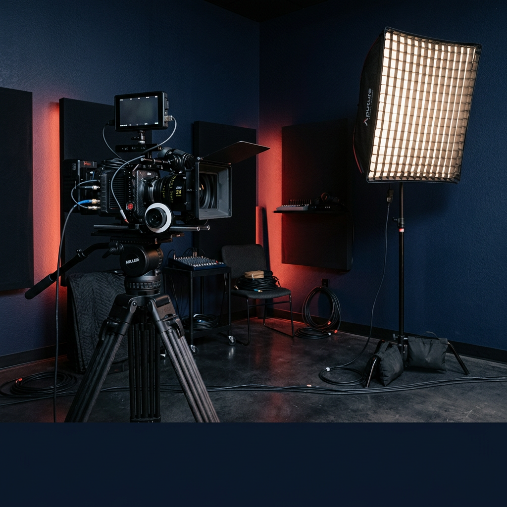

비실명 보호 · 사전동의 게시
SK하이닉스
곽○삼 님 SK하이닉스
과세표준 구간과세표준 1억 2천만원적용 한계세율 38.5%
누적 환급세액누적환급 7천만원조세특례제한법 제16조 적용
“성과급 시즌마다 세금 부담이 컸는데, 매년 연말 한도 진단을 통해 안정형 자산 기업에 꾸준히 출자하며 누적 7천만원 이상 환급받았습니다.”
벤처투자 3,000만원까지 100% 소득공제,
5,000만원 투자 시 88%(4,400만원) 소득공제
조세특례제한법 제16조에 따라 본인의 한계세율(지방소득세 포함 6.6~49.5%)이 그대로 소득공제 환급률이 됩니다. 해당 과세연도 종합소득금액의 50% 한도가 적용됩니다.
사례는 실명 없이 성(姓)만 표기하고 가운데 글자를 ○ 처리하며, 코멘트와 소속 표기는 사전 동의 범위 내에서만 게시합니다. 실제 환급액은 개인별 과세표준과 소득공제 한도(종합소득금액의 50%)에 따라 달라집니다. [투자자 DB 연동 템플릿 · 가안]
[출자 기간 · 자산군 · 연도]
[누적 금액 · 회차 수]
[최초 → 증액 금액 · 시기]
[재출자 횟수 · 이유 키워드]
절세 관련 주요 뉴스 기사를 확인하고(클릭 시 원문 이동), 성과급·연말정산·종합소득세 신고 시기를 미리 점검하세요. 당해 연도 소득공제를 받으려면 매년 12월 31일 이전까지 출자·투자가 완료되어야 합니다.
성과급을 받는 대기업 임직원, 전문직·고소득자가 시기를 놓치지 않도록 매월 필요한 절세 일정을 안내합니다.
『조세특례제한법』 제16조 및 『벤처투자 촉진에 관한 법률』에 따라 거주자 개인이 개인공동투자(직접투자) 또는 개인투자조합(간접투자)에 출자해 벤처인증기업에 투자하는 경우, 출자·투자 금액을 종합소득금액(50% 한도)에서 소득공제하여 세금을 환급합니다. 단, 타인의 기존 출자지분·구주를 양수하는 투자는 공제 대상에서 제외됩니다.
근로소득자·사업소득자·전문직 등 국내 거주자 개인
상환전환우선주(RCPS)·전환사채(CB)·신주 등으로 투자하고, 투자자는 구간별 최대 100%를 소득공제 받습니다.
만기 때 투자금 상환을 요청할 수 있는 상환권 + 보통주로 바꿀 수 있는 전환권을 가진 우선주
사채와 비슷하게 상환이 예정되어 있지만, 상법상 상환 시 회사에 배당가능이익이 있어야 하며 매년 이익의 일부를 상환기금으로 적립해야 합니다. 벤처캐피탈(VC)과 개인투자조합의 주요 투자수단입니다.
주식(보통주)으로 전환할 수 있는 선택권이 붙은 채권
발행 시에는 일반 회사채와 같지만, 일정 기간 뒤 전환권이 발동하면 투자자가 원할 때 주식으로 바꿔 기업가치 상승에 따른 차익을 기대할 수 있습니다.
기술성·성장성이 상대적으로 높아 정부 지원이 필요하다고 인정되는 기업으로, 「벤처기업육성에 관한 특별법」 제2조의2 요건 중 1가지를 충족해 벤처기업 확인을 받은 기업입니다.
미국에서는 위험성은 높지만 성공 시 높은 수익이 기대되는 기업으로, 일반적으로 Venture Capital(모험자본)로부터 투자를 받은 기업을 뜻합니다. 다른 나라에서는 신사업·기술집약·첨단기술기업을 가리키기도 합니다.
세액공제가 산출세액에서 정률(12~15%)을 차감하는 것과 달리, 소득공제는 과세표준(세금을 매기는 소득) 자체를 줄입니다. 따라서 본인에게 적용되는 한계세율(6.6~49.5%)이 곧 예상 환급률이 되며, 한계세율 38.5%(과세표준 8,800만~1.5억원) 기준 3,000만원 투자 시 약 1,155만원이 환급됩니다.
한계세율 38.5%(과세표준 8,800만~1.5억원) 투자자 기준
배수는 세액공제 12%(360만원) 대비 3.2배, 세액공제 15%(450만원) 대비 2.5배입니다. 실제 환급액은 종합소득금액 50% 한도, 기납부 세액 및 다른 소득·세액공제 항목에 따라 달라집니다.
| 과세표준 구간 | 한계세율 = 환급률 | 3,000만원 투자 시 |
|---|---|---|
| 1,400만원 이하 | 6.6% | 198만원 |
| 1,400만~5,000만원 | 16.5% | 495만원 |
| 5,000만~8,800만원 | 26.4% | 792만원 |
| 8,800만~1.5억원 | 38.5% | 1,155만원 |
| 1.5억~3억원 | 41.8% | 1,254만원 |
| 3억~5억원 | 44% | 1,320만원 |
| 5억~10억원 | 46.2% | 1,386만원 |
| 10억원 초과 | 49.5% | 1,485만원 |
근거: 『소득세법』 제55조 제1항 종합소득 과세표준 구간 및 『지방세법』 제103조의3 지방소득세(소득세의 10%) 합산 세율 기준. 공제 후 과세표준 구간이 낮아질 경우 구간 경계에 따라 실효 환급액이 일부 조정될 수 있습니다.
조세특례제한법 제16조 제1항: 3,000만원 이하분 100% · 3,000만~5,000만원분 70% · 5,000만원 초과분 30%
| 투자금 | 산식 | 소득공제 금액 | 실효 공제율 |
|---|---|---|---|
| 1,000만원 | 1,000만원×100% | 1,000만원 | 100% |
| 2,000만원 | 2,000만원×100% | 2,000만원 | 100% |
| 3,000만원 | 3,000만원×100% | 3,000만원 | 100% |
| 5,000만원 | 3,000만원×100% + 2,000만원×70% | 4,400만원 | 88% |
| 7,000만원 | 3,000만원×100% + 2,000만원×70% + 2,000만원×30% | 5,000만원 | 71% |
| 1억원 | 3,000만원×100% + 2,000만원×70% + 5,000만원×30% | 5,900만원 | 59% |
※ 본 표는 한국벤처경영원 고유의 노하우가 반영된 콘텐츠로 무단전재·복사·재배포를 금합니다. 해당 과세연도 종합소득금액의 50% 한도가 별도 적용됩니다.
『조세특례제한법』 제16조(벤처투자조합 출자 등에 대한 소득공제) ① 요지
거주자가 해당 출자 또는 투자를 하는 경우 2028년 12월 31일까지 출자·투자한 금액 중 3천만원 이하분은 100분의 100, 3천만원 초과분부터 5천만원 이하분까지는 100분의 70, 5천만원 초과분은 100분의 30에 상당하는 금액(해당 과세연도 종합소득금액의 100분의 50을 한도)을 종합소득금액에서 공제한다. 다만 타인의 출자지분·투자지분 또는 수익증권을 양수하는 방법으로 출자·투자하는 경우에는 그러하지 아니하다.
개정 2025. 12. 23. 반영 · 원문: 국가법령정보센터 조세특례제한법 제16조 ↗ · 농어촌특별세 비과세(농어촌특별세법 시행령 제4조 제1항)
출자일이 속한 과세연도부터 출자 후 2년이 되는 날이 속한 과세연도까지 중 1과세연도를 골라 공제받을 수 있습니다. 출자·투자확인서 발급 시 투자조합관리자 또는 벤처기업에 소득공제시기 변경신청서를 제출합니다.
근거: 조세특례제한법 시행령 제14조 제7항 ↗ (신설 2020. 2. 11.)
창업 후 5년 이내, 또는 벤처기업 전환 후 3년 이내인 벤처기업에 신주 출자한 주식·출자지분은 3년 경과 시 양도소득세 비과세됩니다(특수관계 없는 벤처기업 출자 한함). 반대로 출자 후 3년 이내 지분 이전·회수 시 이미 공제받은 세액이 추징됩니다.
근거: 조세특례제한법 제14조 제1항 제4호 · 제16조 제2항
5,000만원까지는 소득공제율이 높은 벤처투자(공제액 4,400만원)를 우선 배분하고, 초과 여유자금은 국민성장펀드(공제액 1,600만원)로 보완하는 방식이 절세 효율을 높입니다. 벤처투자는 1,600만원만 투자해도 국민성장펀드 5,000만원 투자와 동일한 소득공제 금액(1,600만원)이 인정됩니다.
| 항목 | 국민성장펀드 | 벤처투자 소득공제 |
|---|---|---|
| 소득공제율 | 최대 40% | 3,000만원까지 100%, 5,000만원 투자 시 88%(4,400만원) |
| 종합한도(2,500만원) | 포함 (조세특례제한법 제132조의2) | 대상 아님 · 종합소득금액의 50% 별도 한도 |
| 환매·보유 기간 | 5년 폐쇄형, 중도환매 불가 | 조합 규약에 따름 (소득공제 유지 의무 보유기간 3년) |
| 가입 제한 | 금융소득종합과세 대상자 제외, 소득확인증명서 필요 | 금융소득종합과세 대상자도 종합소득 내 공제 가능 (개별 확인) |
| 투자 한도 | 연 1억원, 5년 총 2억원 | 출자액 제한 없음 (공제는 종합소득금액 50% 한도) |
개인별 연간 소득공제 종합한도는 2,500만원 하나이며, 신용카드·주택청약 등 일반 공제 항목이 여기에 합산됩니다. 반면 벤처투자 소득공제(조세특례제한법 제16조)는 종합한도(2,500만원) 적용 제외 항목으로 분류되어, 기존 공제 한도가 모두 찬 고소득자도 본인 종합소득금액의 50% 한도까지 추가로 소득공제를 받을 수 있습니다.
과세표준 구간(한계세율)과 벤처투자 금액을 선택하면 조세특례제한법 제16조 산식에 따른 소득공제 금액과 예상 환급세액을 즉시 계산합니다.
산식: 3,000만원 이하분 100% + 3,000만~5,000만원분 70% + 5,000만원 초과분 30% 공제(조세특례제한법 제16조 제1항). 성과급·보너스 합산에 따른 과세표준 구간 이동과 정밀 한도 계산은 1:1 상담에서 확인해 드립니다.
한계세율 38.5%인 분이 3,000만원을 벤처투자하면 3,000만원이 소득공제되어 약 1,155만원이 환급될 것으로 추정됩니다.
※ 유의사항: 위 금액은 『소득공제 금액 × 선택 한계세율』로 단순 추정한 참고치입니다. 실제 환급세액은 ① 해당 과세연도 종합소득금액의 50% 한도, ② 공제 적용 후 과세표준 구간 변동 여부, ③ 본인의 기납부 결정세액 한도에 따라 달라지며, 벤처투자는 원금 손실이 발생할 수 있고 투자 수익을 보장하지 않습니다.
미국국채·부동산·음악저작권 기반 벤처인증기업은 환금성·안정성·수익성의 우선순위와 경기 사이클이 서로 달라 포트폴리오 안에서 상호 보완합니다. 각 자산군의 기업 IR과 공시는 대표기업 사이트에서 확인할 수 있습니다.
| 자산군 | 안정성 | 수익성 | 환금성 | 운용 특징 및 우선순위 |
|---|---|---|---|---|
| 미국국채 | 2 | 3 | 1 | 환금성 > 안정성 > 수익성 · 만기 보유 목적 운용 (미국채 + CMA 대기 구조) |
| 부동산 | 1 | 2 | 3 | 안정성 > 수익성 > 환금성 · 청년 주거지원 부동산자산 보유·운용 |
| 음악저작권 | 2 | 1 | 3 | 수익성 > 안정성 > 환금성 · 음악저작권 매입 및 퍼블리싱 선급으로 환금성 보완 |
숫자(1·2·3)는 각 자산군 내에서의 상대적 강점 우선순위를 뜻합니다.
미국채 자산을 확보·운용합니다. 만기 보유 목적, 중도 환매 없음. 2026년 7월부터 변동성이 높을 때는 CMA에서 대기하는 "미국채 + CMA" 구조로 운용하며, 회차별 매입 내역을 공시합니다(2026년 7월 기준 6회차).
청년 대상 주거지원 부동산자산을 보유합니다. 보유 자산과 사업 현황을 공개합니다.
음악저작권을 직접 매입하는 벤처인증기업입니다. 작곡가·작사가 등 저작권자 금융지원을 병행하며, 뮤직오너퍼블리싱의 퍼블리싱 선급으로 회수기간을 단축합니다.
뮤직오너의 자회사로, 음악저작권 담보대출을 실행하는 등록 대부업체입니다. 대출 상품 정보는 아트대부캐피탈 사이트에서만 안내합니다.
부동산, 음악저작권, 미국국채 등 실물·금융 자산 중심 벤처인증기업에 투자해 담보적 안정성을 높입니다.
현 사이트(kofund.co.kr) 게재 14개사 · 연도별 재무표와 IR·기업탐방 영상은 관리자 등록 데이터로 각 기업 상세에서 제공 [게재 검토 필요]
중소벤처기업부 등록 창업기획자(액셀러레이터). 개인투자조합 결성·운용, 투자심사, 그룹 계열사 전략·법무·재무·개발·마케팅을 총괄합니다. (한국벤처경영원과의 역할 구분 보기 ↓)
youthup.co.kr ↗국내 주요 기업과 함께 투자자 가치를 만들어 갑니다. [샘플 시안 · 실제 파트너사 확정 후 교체 예정]
개인공동투자(직접투자)는 조합을 거치지 않고 투자자 개인 명의로 벤처인증기업의 신주·상환전환우선주(RCPS)·전환사채(CB)를 직접 인수하는 방식입니다. 개인투자조합(간접투자)과 동일하게 조세특례제한법 제16조 제1항에 따른 소득공제(3,000만원까지 100%)가 적용됩니다. [상세 문안 11월 기획 확정]
| 구분 항목 | 개인공동투자 (직접투자) | 개인투자조합 (간접투자) |
|---|---|---|
| 투자 구조 및 근거 | 투자자 개인 명의로 벤처인증기업에 직접 출자·인수 (조세특례제한법 제16조 제1항 제3호·제4호) | 개인투자조합에 출자 → 조합(GP: 유스업파트너스㈜)이 벤처기업에 투자 (동법 제16조 제1항 제2호) |
| 소득공제율 | 3,000만원 이하 100% · 3,000~5,000만원 70% · 5,000만원 초과 30% | 동일 (조세특례제한법 제16조 동일 적용, 합산 산정) |
| 공제 한도 | 해당 과세연도 종합소득금액의 50% (종합한도 2,500만원 제외) | 동일 (해당 과세연도 종합소득금액의 50%) |
| 투자 대상 선택 | 투자자가 특정 벤처인증기업을 직접 지정해 인수계약 체결 | 조합 규약 및 업무집행조합원(GP)의 포트폴리오 운용에 따름 |
| 출자·투자확인서 발급 | 투자 대상 벤처기업이 중소벤처기업부(개인소득공제시스템)를 통해 신청·발급 | 업무집행조합원(투자조합관리자)이 일괄 신청·발급 안내 |
올해 예상 과세표준·한계세율을 진단하고, 미국채·부동산·음악저작권 등 벤처인증기업의 IR 자료와 발행 조건을 확인합니다.
벤처인증기업과 신주인수계약 또는 사채인수계약을 직접 체결하고 본인 명의 계좌에서 발행기업 계좌로 주금(투자금)을 납입합니다.
중소벤처기업부(지방청)·개인소득공제시스템을 통해 조세특례제한법 제16조에 따른 『출자 또는 투자확인서』를 발급받습니다.
근로소득자는 1월 연말정산 시 회사에, 사업소득자·전문직은 5월 종합소득세 신고 시 관할 세무서에 확인서를 제출해 환급받습니다.
투자설명회와 1:1 상담에서 자주 묻는 질문을 분야별로 정리했습니다. 세무·컴플라이언스 검토를 마친 답변은 ‘검수 완료’로 표시됩니다.
보도자료·공지·리치레터 목록(제목·요약·매체·날짜 병기)과 공식 소셜미디어 채널 콘텐츠를 한곳에서 확인하세요.
매월 다섯 가지 고정 테마로 발행합니다. 3년치 월별 아카이브를 웹에서 볼 수 있습니다.
소득공제 구조와 자산군별 기업 IR을 설명하고 질의응답을 진행합니다. 기업 대상 오프라인 설명회도 수시로 진행합니다.
2014년 창립 · 서울머니쇼·세금 재테크 포럼·파트너세션으로 투자자와 만나고 있습니다.
한국벤처경영원(KVM, 대표 김승찬, 2014년 창립)은 벤처투자 소득공제·개인투자조합·개인공동투자 전문 정보·컨설팅 기관입니다. 미국국채·부동산·음악저작권 기반 벤처인증기업의 투자 정보를 소개하고, 근로소득자·사업소득자·전문직 투자자가 『조세특례제한법』 제16조에 따라 투자금(3,000만원 이하 100%, 종합소득금액 50% 한도)을 적법하게 소득공제 받을 수 있도록 절차와 서류를 안내합니다.
개인투자조합의 결성·운용은 중소벤처기업부 등록 창업기획자(액셀러레이터)인 유스업파트너스(주)가 업무집행조합원(GP)으로서 담당하며, 한국벤처경영원은 조합 운용기관이 아닙니다. 벤처투자는 원금 손실이 발생할 수 있으며 투자 수익을 보장하지 않습니다.
분야별 전문가와 세무·회계 자문단이 적법하고 투명한 소득공제 컨설팅을 지원합니다.
한국벤처경영원 대표
[직함·경력 3~5줄 확인]
개인투자조합·벤처투자 심사
소득공제·절세
[전문분야]
소득 유형과 관심 분야만 알려주시면, 담당자가 직접 연락드려 올해 종합소득금액 50% 한도 내 공제 가능 금액과 구비 서류를 함께 확인해 드립니다.
공식 소셜미디어 & 유튜브 영상
카드뉴스 "벤처투자 소득공제 상식" 시리즈와 온라인 투자설명회 다시보기를 채널에서 만나보세요.

▶유튜브한국벤처경영원 채널↗온라인 투자설명회 다시보기 IG인스타그램@kvm0615↗카드뉴스 · 스토리 · 릴스 N네이버 블로그blog.naver.com/ko-funding↗제도 해설 · 투자기업 소개 톡카카오 채널한국벤처경영원↗1:1 상담 · 설명회 알림Shorts유튜브 쇼츠
Video유튜브 영상